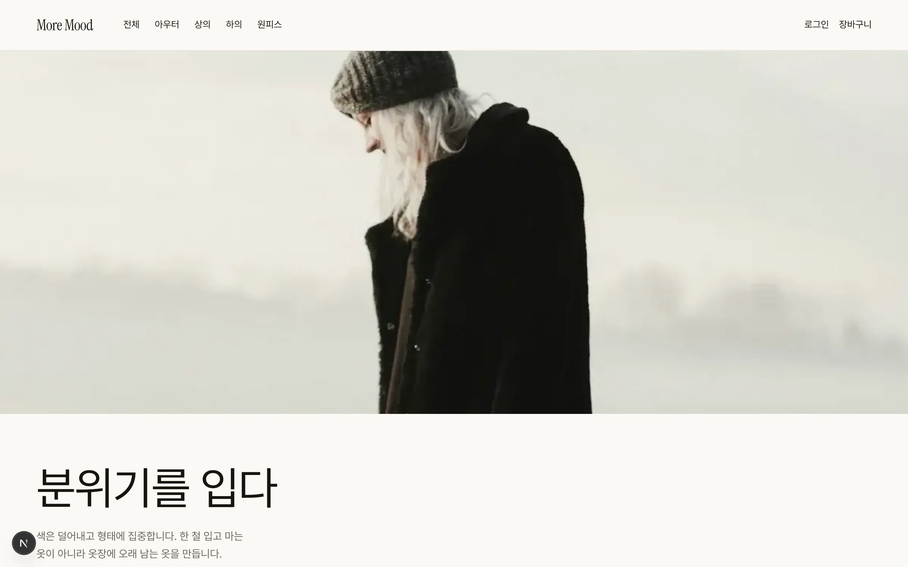
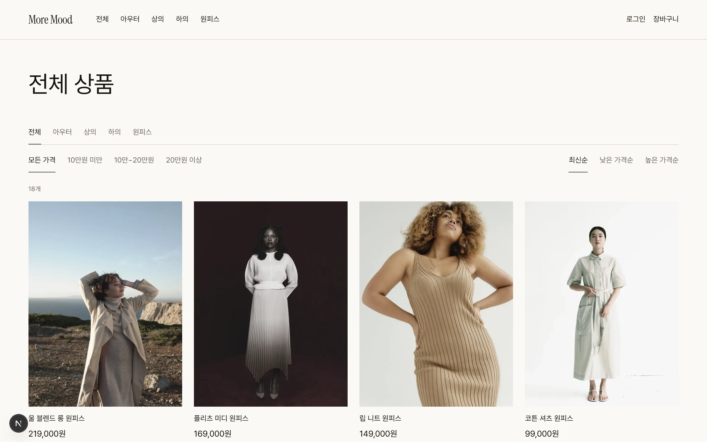
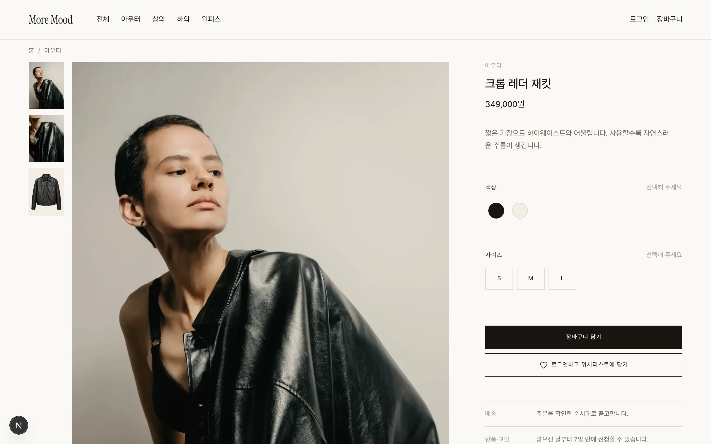
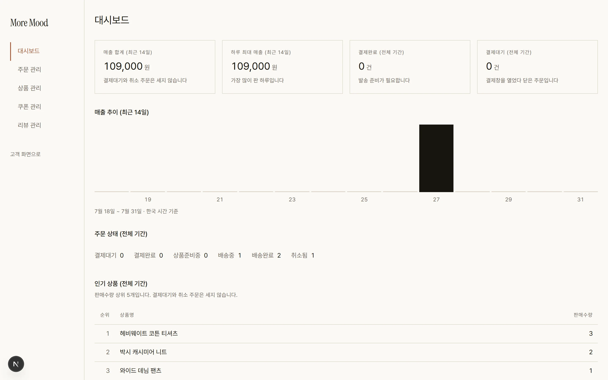
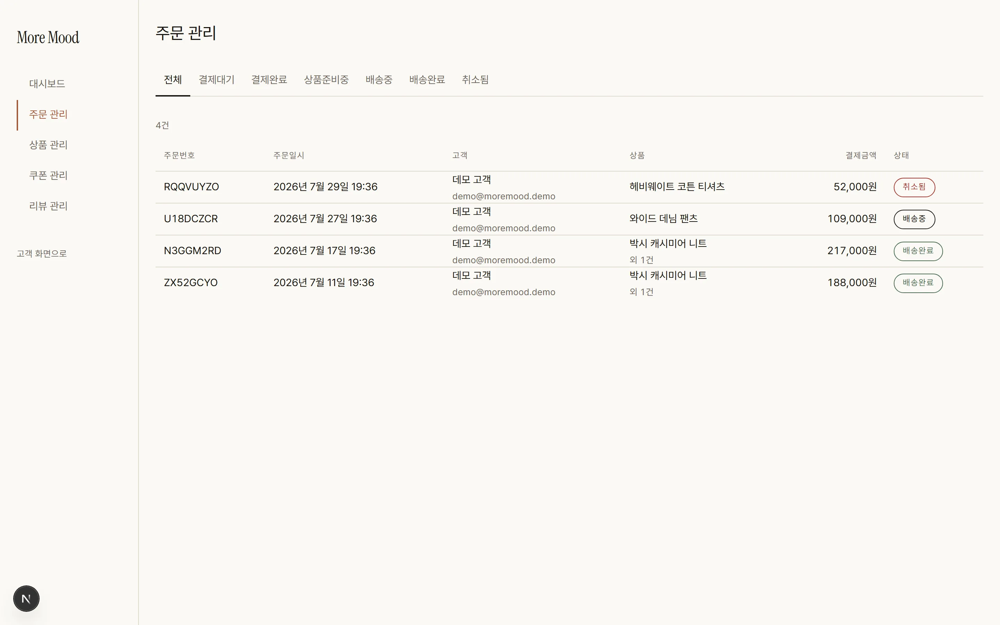

CASE STUDY/moremood
토스페이먼츠 테스트 결제로 구매 전 구간이 실제 동작하는 패션 이커머스





이커머스에는 브라우저를 믿으면 안 되는 지점이 세 군데 있습니다. 결제 승인은 시크릿 키로 서버가 직접 호출해야 하고, 주문 금액은 브라우저가 보낸 값을 그대로 쓰면 안 되고, 재고는 동시에 들어온 주문을 트랜잭션으로 막아야 합니다. 셋 다 정적 사이트로는 되지 않습니다. 서버에서 도는 코드가 반드시 있어야 합니다.
이 작업을 고른 이유이기도 합니다. 앞선 세 건은 정적 배포와 Supabase(DealDesk), Tauri와 Rust(Stockbook), Python 봇(Askline)이라 서버를 직접 쥐고 도는 구간이 없었습니다. 서버가 값을 정해야만 성립하는 문제를 일부러 골랐습니다.
클라이언트가 서버로 보내는 것은 variantId와 수량뿐입니다. 가격은 서버가 DB에서 조회해 계산합니다. 계산이 일어나는 지점을 함수 하나로 모아둔 덕분에 장바구니 화면과 결제창이 서로 다른 금액을 말할 수 없습니다.
토스 리다이렉트로 돌아온 금액은 DB에 적힌 주문 금액과 대조한 뒤에만 승인 API를 호출합니다. 이 대조가 없으면 브라우저에서 금액을 고친 결제가 그대로 통과합니다. 결제는 되돌리기 어려운 동작이라 승인 직전에 한 번 더 막았습니다.
재고 차감은 조건부 UPDATE 한 문장입니다 — WHERE id = ? AND stock >= ?. 읽고, 확인하고, 쓰는 순서로 짜면 확인과 쓰기 사이에 틈이 생겨 같은 재고가 두 번 팔립니다. 한 문장에는 그 틈이 없습니다. 영향받은 행이 0이면 롤백하고 결제를 취소합니다.
관리자 권한은 세션이 아니라 요청이 들어온 시점의 DB로 판정합니다. JWT는 최대 30일까지 낡을 수 있어서, 세션에 담긴 역할만 보면 권한을 회수한 뒤에도 예전 토큰이 통과합니다.
고객 데모 demo@moremood.demo / demo1234 — 주문 이력이 있어 마이페이지와 리뷰를 볼 수 있습니다.
관리자 데모 admin@moremood.demo / demo1234 — /moremood/app/admin 에서 주문 상태 변경·상품·쿠폰·리뷰를 관리합니다.
두 계정 모두 로그인 화면에서 자동 채우기를 누르면 됩니다. 결제는 토스페이먼츠 테스트 모드라 실제로 청구되지 않습니다.